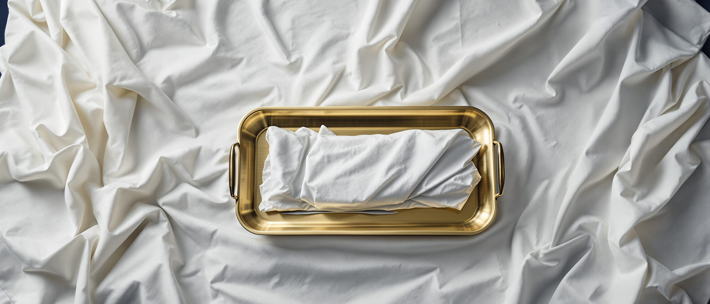
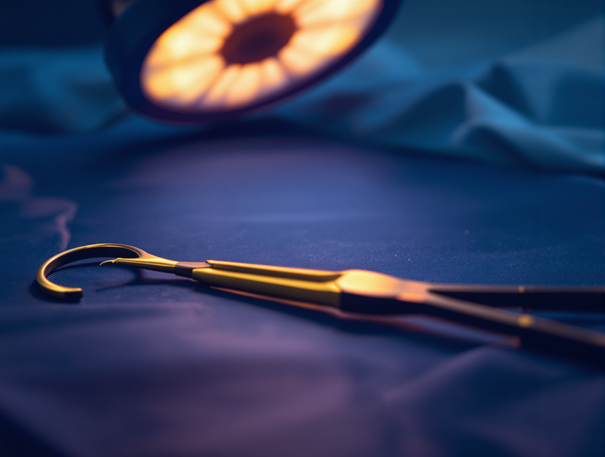
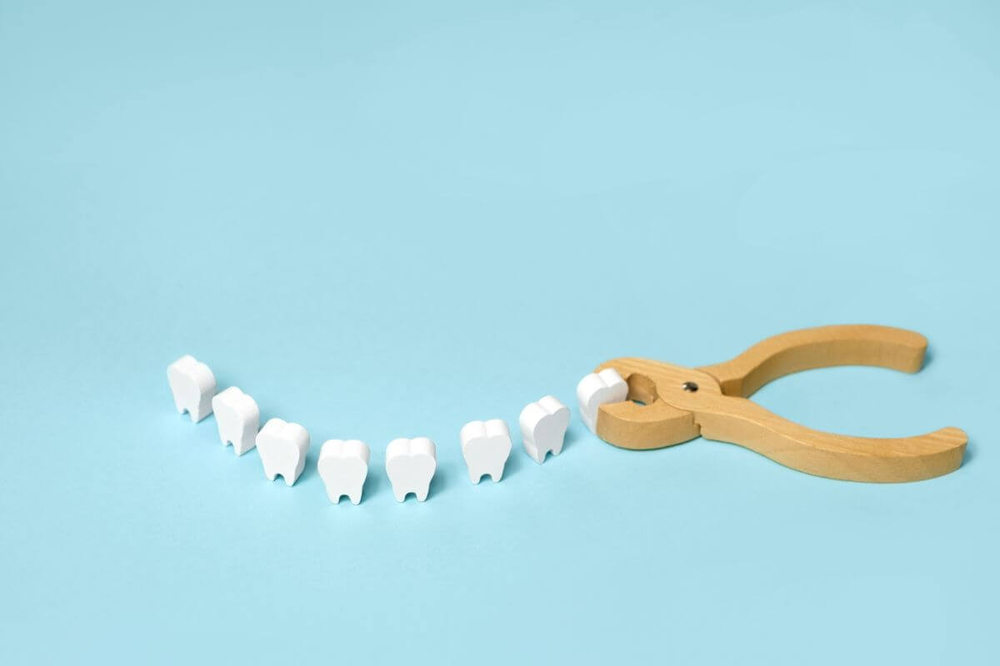
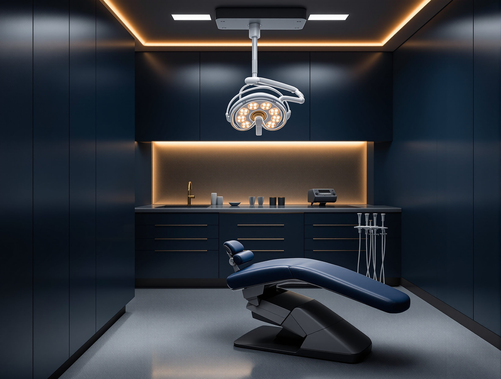
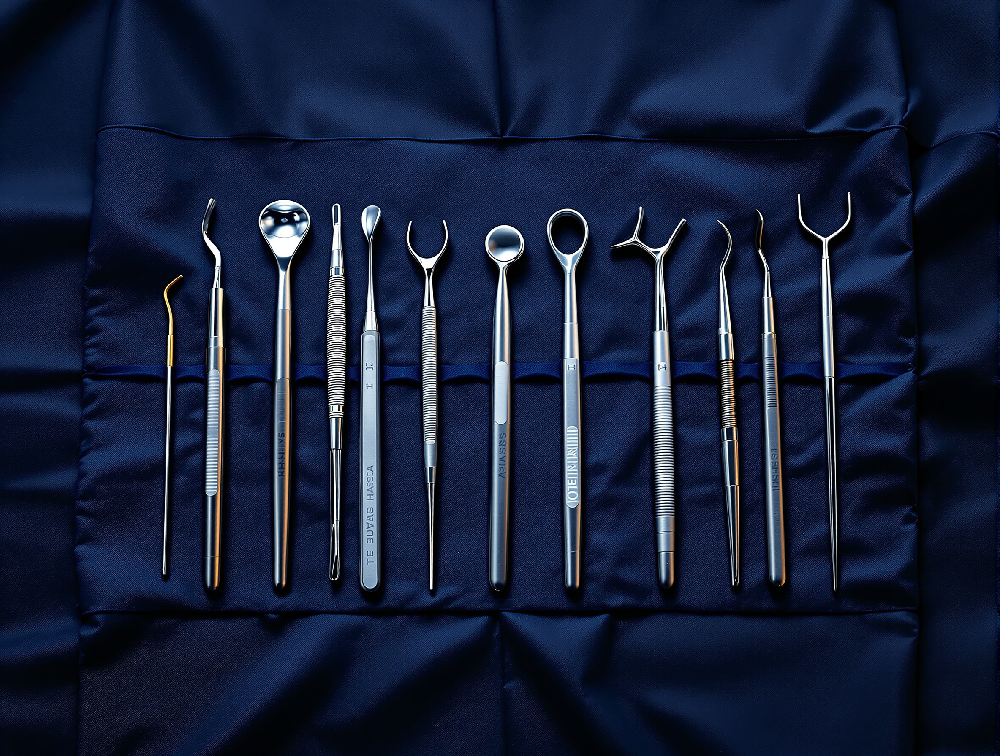

Oral Surgery
Owns the case: reads the imaging, chooses the approach, and carries out the operation.
Hours09:00 to 20:00, varies by branch
Book an AppointmentNot sure which treatment you need? Thirty-one specialists across nine disciplines. Tell us what you want looked at and we will place you with the one who handles it.
Self-pay clinic. We do not accept HMO or dental insurance. Every treatment is paid directly.

Oral surgery, at four Metro Manila clinics
Oral surgery covers surgical extractions and the procedures around them, planned on a 3D CBCT scan.
The first consultation is free, and you leave it knowing what your own imaging actually reveals and what your case will cost. Confirm current consultation terms with the clinic before you book.

Nine stages, and two of them exist because this is surgery rather than dentistry.
Stage 04 is about where your procedure is safe to happen, which for some medical histories is a hospital and not a dental clinic. Stage 09 is about risk, stated in full rather than summarised into comfort.
Next
Stage 01, what the word surgical actually changes about an extraction, and why it is a different operation rather than a harder version of the same one.
Oral surgery is the part of dentistry that involves cutting.
A simple extraction lifts a tooth out whole with forceps. A surgical extraction is what happens when that is not possible: the gum is lifted as a flap, bone is removed where it blocks the path, the tooth is sectioned into pieces, each piece is taken out separately, and the site is cleaned and closed with sutures.
That is not a harder version of the same procedure. It is a different one, with a different recovery and a different set of things that can go wrong, which is why it is planned on a scan rather than attempted and then abandoned.
Something in the jaw is infected, obstructed, painful, or in the way of a restoration that cannot proceed until it is dealt with.
The scan comes before the plan, and the plan comes before the appointment. For a lower wisdom tooth it maps the exact relationship between the roots and the inferior alveolar nerve canal. For an upper one it shows how close the roots sit to the sinus floor. That is the information that decides the surgical approach, and deciding it in advance is what separates a planned operation from an improvised one.
Next
Stage 02, the seven named operations grouped under this heading, and what each one is actually for.
These are the operations an oral surgeon handles rather than a general dentist.

Next
Stage 03, whether your case is one of these at all, including the two situations where the correct answer is to do nothing surgical.
You need it if you have one of these.
And the two cases where the answer is no
A wisdom tooth that is fully erupted, upright, cleanable and causing no symptoms does not automatically need removing. Prophylactic removal of an asymptomatic, functional third molar is not a default here. If there is no sign of pathology and you can clean it, you will be told to keep it and monitor it.
An extraction is quicker and costs less today than root canal treatment plus a crown. It is also a permanent loss, and replacing a lost tooth later costs more than the treatment that would have kept it. If your case is restorable, the endodontist or the prosthodontist who could restore it works in the same practice and can look at it before anything is removed.
Next
Stage 04, the question that comes before technique: whether this building is the right place for your procedure at all.
Tell us your full medical history and every medication and supplement you take, including blood thinners, before the procedure is booked.
This is the single piece of information that most often changes the plan, and it changes it before anything else is decided.
Some cases belong in a hospital rather than in a dental clinic. Our clinics work under local anesthesia. If your medical history means your procedure needs a hospital setting, you will be told that at the assessment rather than partway through it.

Next
Stage 05, the appointment sequence, the procedure itself, and what the days immediately after are actually like.
Seven steps, and you should know what step 03 feels like before you agree to it.
You will feel pressure and movement. You should not feel sharpness. If you do, say so immediately and more anesthetic is given before work continues. That instruction is given to you in the chair, and it is repeated here so you are not hearing it for the first time while lying down.

| Step | What happens | How long |
|---|---|---|
| 01 Consultation and imaging | Examination, medical history, and a 3D CBCT scan where the case needs one. This is the information that decides the surgical approach. | 45 to 60 minutes |
| 02 Planning and medical review | The surgeon decides the approach, whether the tooth will be sectioned, whether bone will be removed and whether the site will be grafted. Medications are reviewed. You get the fee in writing and the post-operative instructions in advance, so you can arrange the day around them. | Same visit, or within a week |
| 03 The procedure | Local anesthesia first, and the site is tested before anything begins. The flap is raised, the tooth or lesion is removed, the site is irrigated and cleaned, graft material is placed if the plan calls for it, and the flap is sutured. | 30 to 90 minutes |
| 04 Immediate recovery | You bite on gauze in the clinic until the initial bleeding stops, then leave with written instructions and any prescribed medication. | 30 to 45 minutes |
| 05 The first forty-eight hours | Swelling peaks around day two. Ice on and off for the first day, rest, soft cold food, no rinsing and no spitting for the first 24 hours, no smoking, and no drinking through a straw. | At home, not in the chair |
| 06 Review and suture removal | The site is checked for healing and the sutures are removed if they are not the dissolving type. | 15 to 20 minutes, at 7 to 10 days |
| 07 Onward treatment, where it applies | A grafted site waits before an implant can go into it. An exposed canine is passed back to the orthodontist. A biopsy result is discussed with you as soon as it comes back. | 3 to 6 months for a graft |
Next
Stage 06, whose judgement the plan rests on, and who else looks at a tooth before it is written off.
Procedures are performed by an oral surgery specialist. The scan reading, the surgical decision and the operation itself are theirs.
That matters most where a case is not straightforward. If imaging reveals a root wrapped around the nerve canal, whether to take the whole tooth or leave a fragment deliberately in place is a surgical judgement, not a general one, and it is made by the person who will live with the consequence.

Oral Surgery
Owns the case: reads the imaging, chooses the approach, and carries out the operation.
Endodontics
Consulted before a tooth is written off. If a failing root canal can be retreated, that conversation happens before an extraction is booked.
Prosthodontics
Consulted where a tooth is coming out and will need replacing, so the site is prepared for what follows rather than simply emptied.
Orthodontics
Where a canine is exposed and bonded, the case returns to the orthodontist who asked for it and who brings the tooth into the arch.
Next
Stage 07, the three named instruments, and one thing this practice does not offer.
Three named systems, and what each of them changes about the margin of error.
We name the systems because a name can be checked. An adjective cannot.

3D CBCT imaging
Your scan is taken where you are being treated rather than at a separate imaging centre on a separate day. For this kind of operation it is the difference between knowing where the nerve canal runs and estimating it from a flat film.
All four clinicsPiezotome ultrasonic instrumentation
Cuts bone with ultrasonic vibration rather than a rotating bur. The frequency is tuned to mineralized tissue, so it cuts bone while being far less likely to tear nerves, the sinus membrane or the gum flap on contact. In practice bone can be removed close to a nerve canal or under a sinus floor with a narrower margin of error, and the cut surface is left cleaner for healing.
Named installed systemSol Dental Laser
Operated here for soft-tissue work. Whether it is used in your procedure depends on what the procedure involves, and the surgeon will tell you at the planning stage rather than listing it as a feature you are buying.
Named installed systemWe do not offer sedation dentistry, and we do not claim to. Procedures here are done under local anesthesia. If your case needs more than that, it needs a different setting and you will be told so at the assessment.
Next
Stage 08, the money: an anchor figure, the drivers behind it, and how payment actually works at this practice.
Per procedure. Anchored to published market ranges, not to an Elevate price list.
Every peso amount on this page is representative and anchored to published market ranges - it is not a price quoted by Elevate Dental. Each procedure is quoted after a clinical assessment.
What moves the final figure
The exact figure is confirmed at consultation, after the scan has been read, and it is given to you in writing before the procedure is booked.
The written figure states whether imaging, medication and the review appointment are included.
How you pay
Elevate Dental does not accept HMO or dental insurance. All treatment is self-pay.
HMO coverage cannot be used for dental treatments at our clinics. Payment is by cash, bank cheque, bank transfer, debit or credit card, or QR payment. It is stated here, in the stage where the money is discussed, because finding it out late is worse than reading it now.
A surgical fee follows a scan that has actually been read, so the only way to get yours is an examination.
Next
Stage 09, the last one: the risks named in full, the eight questions people actually ask, and what to do in the days after.
Every surgical procedure carries risk, and yours is explained before you consent rather than after. For lower wisdom teeth the specific ones are temporary or, less commonly, lasting altered sensation in the lip, chin or tongue if the nerve is disturbed, along with bleeding, infection, dry socket, and sinus communication for upper molars. The scan exists precisely to quantify the nerve risk in your case in advance rather than discovering it during the procedure.
Before you consent
Yes. The anesthetic is local rather than general, so you are awake and the area is numb. You will feel pressure and movement. You should not feel sharpness, and if you do, tell the surgeon immediately and more anesthetic is given before work continues.
No. Each one is judged on the scan and on your symptoms. A wisdom tooth that is upright, fully erupted, cleanable and causing no problems can stay and be monitored. Removing teeth that do not need removing is not the approach here.
With a local anesthetic only, generally yes, assuming you feel steady. If you have been given anything that affects alertness, arrange for someone to take you.
Most people take one to two days away from work for a surgical extraction and return to normal eating over about a week. Soft tissue closes in one to two weeks. The bone underneath continues remodelling for months, which is why an implant into a grafted site waits three to six months.
While you are recovering
Expect soreness and swelling that peak around 48 hours and then settle over the following three to five days. Prescribed analgesia is taken on schedule rather than waited for. Most people find day three noticeably easier than day two. Pain that increases after day three, rather than decreasing, is a reason to call the clinic.
Dry socket is the loss of the blood clot from the extraction site, exposing bone, and it is sharply painful around day three to five. You reduce the risk by not smoking, not rinsing or spitting for the first 24 hours, not drinking through a straw, and not disturbing the site with your tongue. If it happens, call the clinic. It is treatable, and it is treated the same day where possible.
Not for the first 48 hours, and build back gradually over the following week. Raising your blood pressure early restarts bleeding.
Some dissolve on their own and some are removed at the review appointment, which is why that visit is kept even when the site feels fine. Which type you have is decided by the closure your case needed, and you are told before you leave.
Aftercare
The first consultation is free. You will be examined, scanned where the case calls for it, told exactly what the scan shows about your own anatomy, and given the figure for your procedure in writing before anything is booked.
Outcome
Elevating People's Lives, One Smile at a Time.
Tell us what you want looked at and we will place you with the specialist whose discipline the case belongs to, at whichever of the four clinics suits your week.
Self-pay clinic. We do not accept HMO or dental insurance. Every treatment is paid directly.